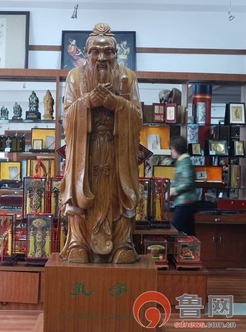

曲阜楷木雕刻传承人颜景新:毕生光阴守护传统技艺
2014-09-18 18:20:00 来源:鲁网

鲁网9月18日讯（记者 王文婷）曲阜有三宝，碑帖、楷雕、尼山砚。作为一项历史悠久的技艺，楷雕内涵丰富、制作精良，具有鲜明的地方特色和独特的艺术魅力。颜景新是曲阜楷木雕刻的传承人，几十年的时间，他从一名懵懂的学徒成长为艺术大师，用毕生的光阴守护着这门古老的技艺。颜景新说，楷木雕刻既是家传的手艺，也是老祖宗留下来的技艺，绝不能让其失传。
曲阜楷木雕刻由子贡所创 采用孔林楷木制成
曲阜楷木雕刻距今已有2400余年的历史，其原材料源于孔林独有的珍稀植物楷树，孔子弟子子贡是楷雕的创始人。相传孔子去世后，孔子弟子为其守灵三年，子贡守灵六年，他把从家乡带来楷木的树苗植于孔林之中，因此有了“子贡手植楷”的典故。子贡用楷木雕刻其师孔子、师母亓官氏两尊圆雕坐像，始创楷雕。
在曲阜，楷木雕刻最有名的是拐杖和如意，这也是曲阜楷木雕刻传统品种。相传西汉初年，孔子的九世孙孔腾去孔林祭祀时，从地上捡起一根被刮落的楷树枝拄着回家，此后便当作了自己的拐杖。汉高祖刘邦前往孔庙祭祀孔子，孔腾为其引路时就拄着那根楷木杖。孔腾对刘邦解释说，这是祖宗林上的木头，拄着它是为了不忘祖德。后来逐渐开始有人效仿制作，并雕刻上各种吉祥图案，于是楷木手杖也逐渐成为曲阜楷木雕刻的一个重要品种。
楷木如意则相传始于宋朝。相传孔子第四十五代孙孔道辅在宁州做官，他不信神怪，举起笏将一条被人们供为神灵的大蟒蛇打死。皇帝听说后大加赞赏，并将那块打蛇的笏板封为“击蛇笏”。这样一来，上朝就不能用这块笏板了，孔道辅就用一块楷木代替了笏板。写这块楷木形似如意，此后就逐渐演变出了楷木如意。
曲阜楷雕经历代艺人们的辛苦和创造形成了独特的艺术风格，取法正宗，形神兼备，刀法古朴简约，浑厚精细。楷雕技法分圆雕、浮雕、透雕和镂空雕。一件楷木雕刻的成品，要经过选料、解木、下料、整形、画图、切、削、净、刻、打磨、上色、打蜡等十几道工序才能最后完成。
颜景新将毕生心血奉献给楷雕技艺
乾隆二十八年，颜景新的祖辈开始从事楷雕技艺，传到他时已是第五代。上个世纪五六十年代，楷雕技艺逐渐没落，最早曲阜楷雕有四大流派，后来只剩孔氏楷雕和颜氏楷雕，现在以颜氏楷雕为盛。
作为家传的技艺，颜景新从小耳濡目染，对楷雕有着浓厚的兴趣，并跟随祖父学习楷雕技艺。祖父临终前，将颜景新托付给自己的好朋友楷雕艺人杨玉田，并在耳边谆谆叮嘱，别辜负了这门家传的手艺。颜景新说，那时楷雕多为家传，但也讲究师承，杨玉田视颜景新为己出，不仅在技艺上悉心指导，而且在做人上言传身教。
颜景新十几岁时发生的一件事情差点让他中断了楷雕艺术的学习。1953年，一位在南京军事学院当兵的孙老师到曲阜看望老友，这位老友正好是颜景新的邻居。孙老师见到颜景新后，有意带他到南京军事学院当兵。刚开始，颜景新没有当真，后来孙老师告诉颜景新他的地址和电话，并给他一个星期的时间让他考虑。这件事很快成为街头巷尾的热议话题，颜景新的师傅也知道了此事，但在他面前绝口不提。到南京当兵可以让颜景新前途无量，但是这意味着家传的手艺就此没落，他心里七上八下。颜景新把自己的犹豫告诉了母亲，母亲的一番话让他回想起爷爷临终前的嘱咐，自此放弃了当兵的念头。
从艺60多年来，颜景新创作了上千件作品，并在长期实践中形成了古朴典雅，造型生动，刀工细腻，意新韵秀的艺术风格。他的楷木圆雕作品《至圣先师——孔子》，根据树根的原始形态，运用圆雕技法，布局合理，删繁就简，孔子形象浑然一体，被称之为艺术珍品。
颜景新说，孔子像的创作不同于其他作品，《论语·述而》曾用“温而厉，威而不猛，恭而安”形容孔子，雕刻时要表现出孔子外在的特征和内在的精神面貌。民间传说孔子的面部特征为“七露”，指唇露齿，眼露睛，鼻露孔，耳露窿。但是工艺美术要有美感，在雕刻孔子的“七露”要掌握一个分寸，他雕刻的作品“七露”均为微露，露而不丑。此外，他还研制了形象各异、风格独特的楷木雕人物，如“寿星”、“仕女”、“根雕人物”等，大大开拓了楷雕艺术的天地。
传统技艺不能完全走产业化道路
从艺几十年来，跟随颜景新学习楷雕工艺的人可不少，但是大多数人都“一切向钱看”，学习几个月以后就“出师”了，缺少学艺的虔诚。颜景新对此既恼火又遗憾。
颜景新坦言，现在传统的楷雕的发展情况并不乐观，其中一个重要的原因是机械化生产对手工生产的冲击力太大。“自己辛辛苦苦创作的东西，用电脑一扫描，就可以得到图纸，然后就能进行机械化生产。但是机械化的生产就会使传统的手艺跑偏、变味儿了。与机械化生产相比，手工制作的楷雕费时费力，价格也较贵，因此销量并不乐观。”
颜景新认为，楷雕作为一项传统的技艺，并不能完全按照文化产业的路子发展。“文化产业考虑的更多的是经济因素，但是传统的手艺很可能在产业化的过程中遗失。可以让一部分楷雕作品进行机械化生产，以扩大其影响力，但是传承人必须掌握完整的技艺，并在传承的基础上进行创新。”
责任编辑：刘梅婷